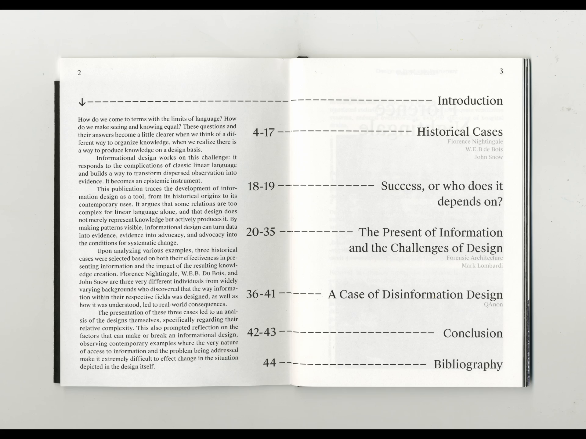
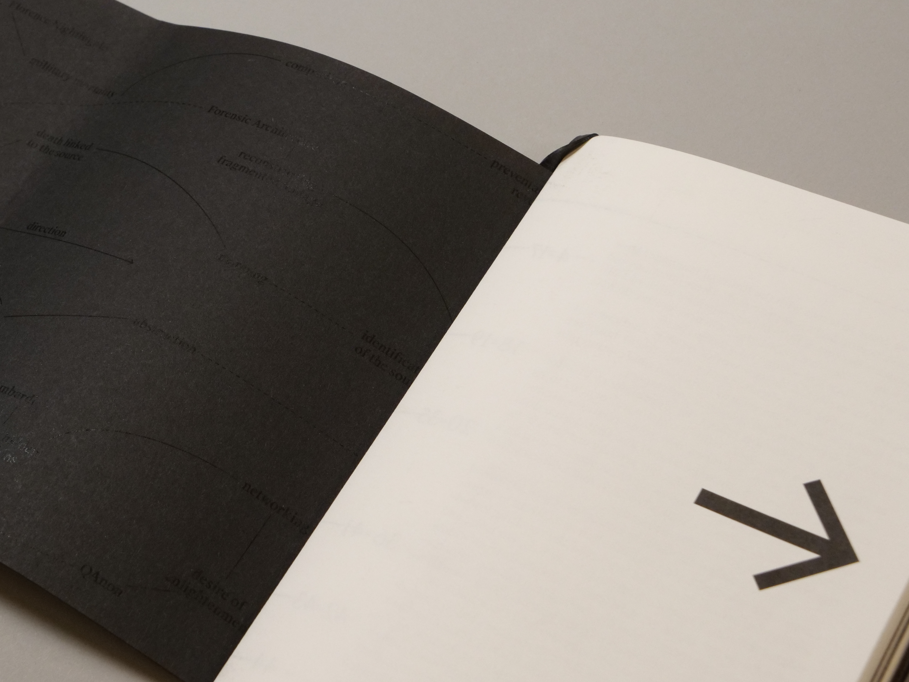

Design as epistemic instrument
This publication traces the development of information design as a tool, from its historical origins to its contemporary uses. It argues that some relations are too complex for linear language alone, and that design does not merely represent knowledge but actively produces it. By making patterns visible, informational design can turn data into evidence, evidence into advocacy, and advocacy into the conditions for systematic change. Concept and Design: Oleksandr Bichuk Text: Antonia Ravanal Lara Created as part of the project seminar “Rewind, Revisit, Recollect & Publish!” Directed by: Prof. Franziska Morlok, Dr. Julia Meer, KM Jasmina Begović, LB Paul Zech Berlin University of the Arts. Print: UdK Berlin Paper: Metapaper SMOOTH Warmwhite 120 gr Font: Suisse Works/Intl’


